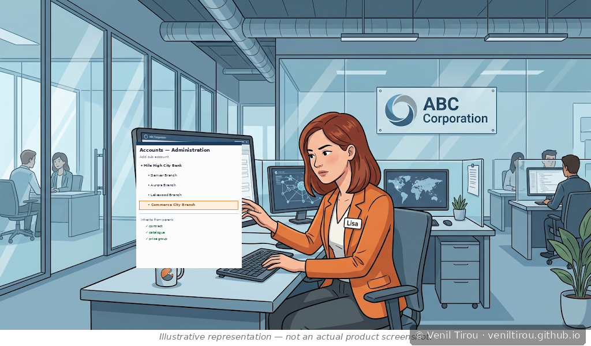
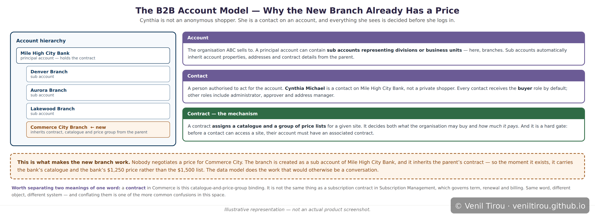
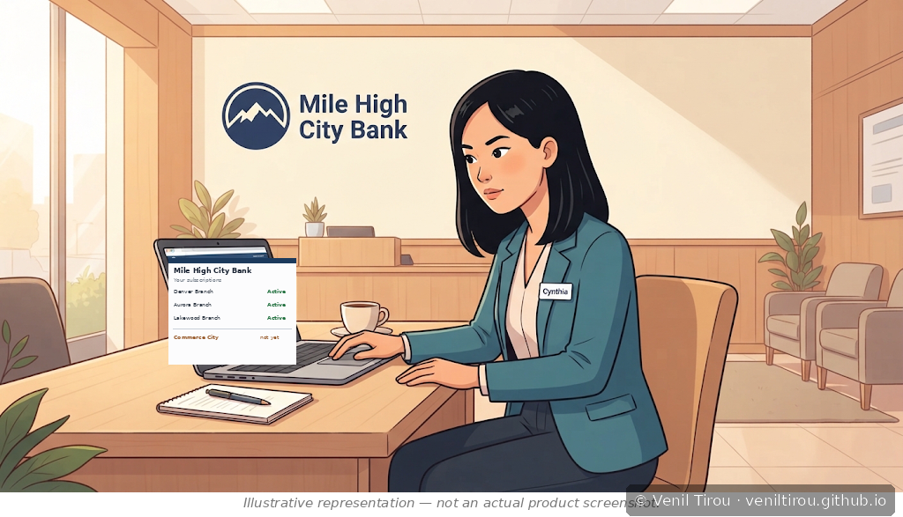
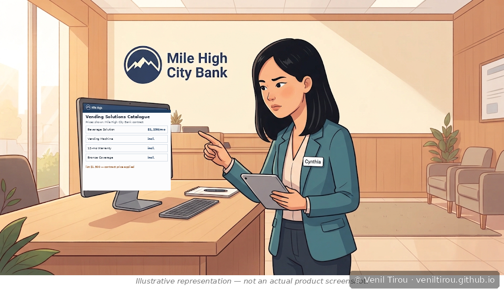
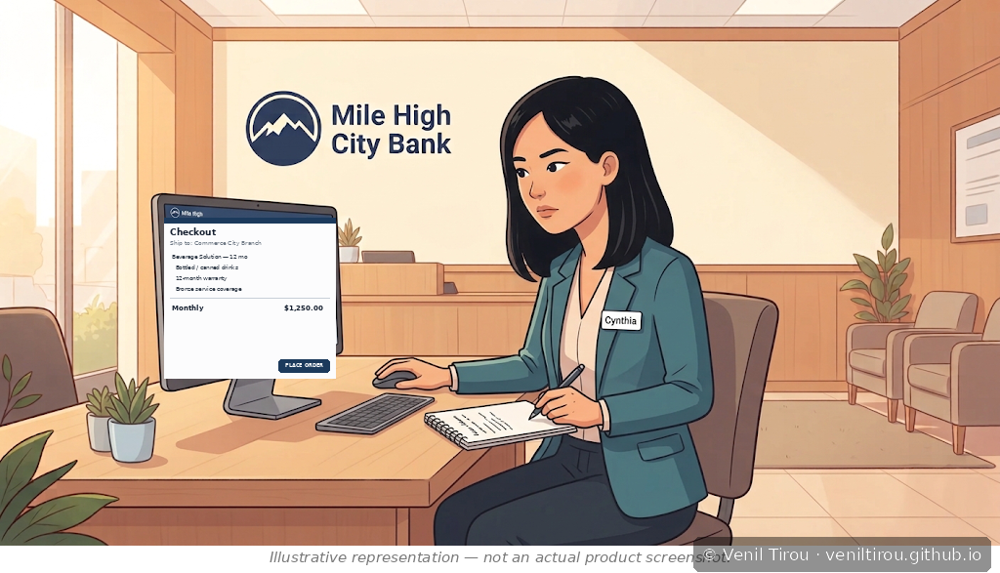
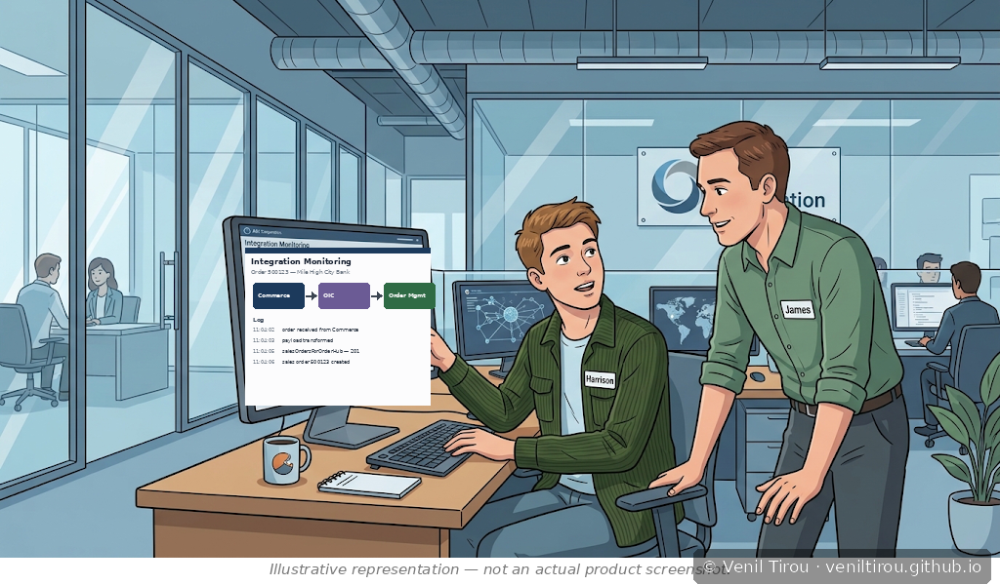
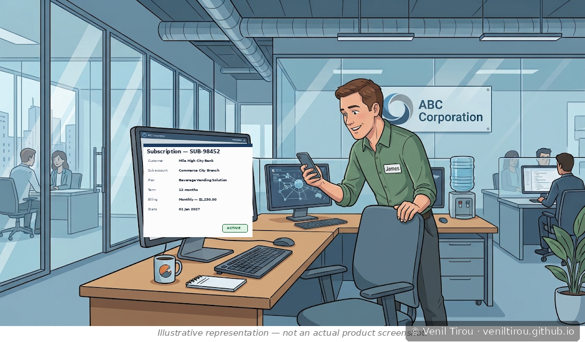
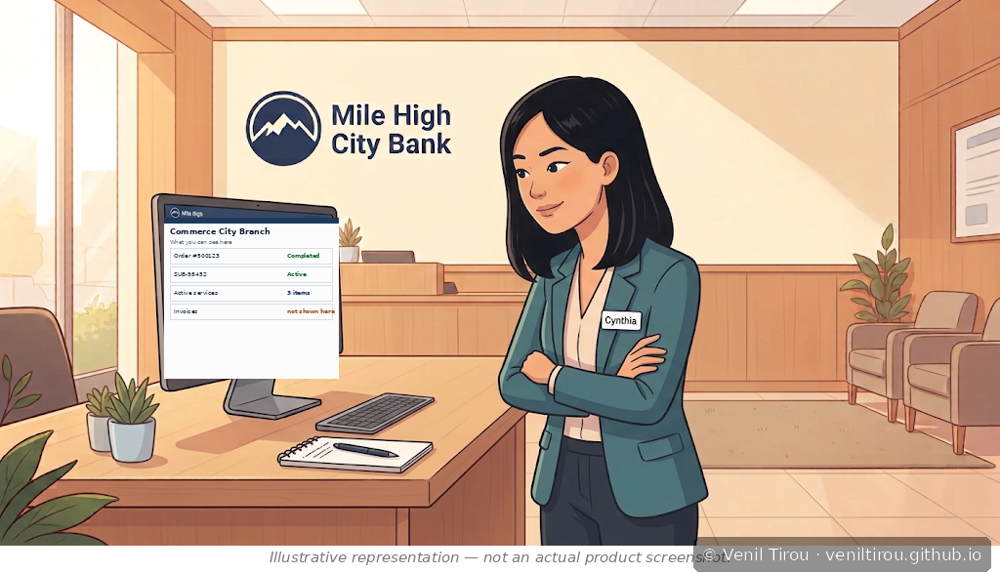
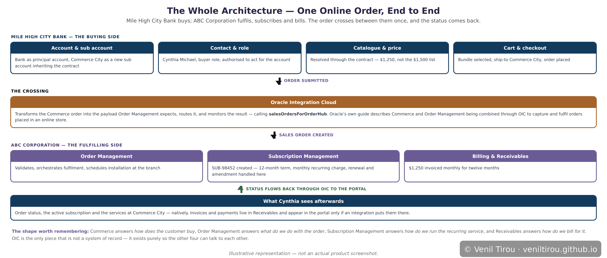

Oracle Commerce — Mile High City Bank Orders Online
Every chapter so far has had a salesperson in it. This one doesn't. The customer opens a browser, sees prices that were negotiated months ago, and places an order for a branch that opened last week — and nobody at ABC Corporation touches it until fulfilment. That is what B2B commerce is actually for.
Scene 1 — A New Branch Opens (ABC Corporation)

📱 On mobile? Pinch to zoom to read the details clearly.
That distinction is the whole chapter in miniature. Because it is a sub account, it inherits the parent's contract, catalogue and price group automatically. Nobody negotiates a price for Commerce City. The moment the branch exists, it already carries the bank's terms.
Scene 2 — The Account Model (ABC Corporation)

📱 On mobile? Pinch to zoom to read the details clearly.
The contract is the mechanism people usually miss. It assigns a catalogue and a group of price lists, so it decides both what the organisation may buy and what it pays. It is also a hard gate: a contact cannot access the site at all until their account has one.
One word, two meanings. A contract in Commerce is this catalogue-and-price binding. It is not a subscription contract in Subscription Management, which governs term, renewal and billing. Same word, different object, different system.
Scene 4 — Cynthia Logs In (Mile High City Bank)

📱 On mobile? Pinch to zoom to read the details clearly.
This is the account model paying off in the first thirty seconds. A consumer storefront would greet her as a stranger. Here she arrives into a relationship that predates her session by several years.
Scene 5 — What She Sees in the Catalogue (Mile High City Bank)

📱 On mobile? Pinch to zoom to read the details clearly.
Nothing about that is a discount code or a promotion. It is the contract resolving, silently, on every price she looks at. If a colleague at a different company logged in, the same catalogue page would show different products at different prices.
Scene 6 — The Solution Bundle (Mile High City Bank)

📱 On mobile? Pinch to zoom to read the details clearly.
Checkout confirms the destination: Commerce City Branch. That matters more than a shipping address usually does, because it decides which sub account the subscription attaches to, where the machines are installed and serviced, and which branch appears on the billing. The cart is still only intent — pressing the button is what turns it into an order.
Scene 8 — The Order Crosses to ABC (ABC Corporation)

📱 On mobile? Pinch to zoom to read the details clearly.
Readers of the replenishment chapter will recognise that endpoint — it is the same Order Management API a route driver's mobile app used to raise a requisition. Different front end, same door into Fusion.
Scene 9 — The Subscription Is Created (ABC Corporation)

📱 On mobile? Pinch to zoom to read the details clearly.
Note what James did in this transaction: nothing. He owns the account and will hear about the new branch, but he did not quote it, key it or chase it. For a repeat purchase against an existing contract, that is the point.
Scene 10 — What Cynthia Can and Cannot See (Mile High City Bank)

📱 On mobile? Pinch to zoom to read the details clearly.
What she cannot see is invoices and payments. Those live in Receivables. Surfacing them in the storefront is an integration, not a feature — and "the customer wants to see their invoices in the portal" is one of the most common requirements implementers meet, with an answer that always disappoints slightly.
Order status is worth noticing too. It originates in Order Management on ABC's side and reaches Cynthia's portal through the same integration layer the order travelled out on. The loop closes.
Scene 12 — The Whole Architecture

📱 On mobile? Pinch to zoom to read the details clearly.
The four questions worth carrying away: Commerce answers how does the customer buy. Order Management answers what do we do with the order. Subscription Management answers how do we run the recurring service. Receivables answers how do we bill for it.
Why This Chapter Matters
That is why the account model deserves the attention this chapter gives it. The storefront is the visible part, but it is mostly a rendering of decisions taken elsewhere. When a B2B commerce implementation goes wrong, it is rarely the cart that is broken — it is that somebody is on the wrong contract, or a location was created as an address when it needed to be a sub account.
And note what did not happen. No quote, no negotiation, no sales rep, no re-keying an order into Order Management by hand. For a repeat customer buying a known bundle against an existing contract, the whole point is that the transaction is uneventful.
Concepts Covered
| Concept | What it means | Scene |
|---|---|---|
| Account | The organisation being sold to. In B2B Commerce a buyer is never anonymous — every session belongs to an account, and what the shopper sees is decided by it. | 2 |
| Sub account | A division, business unit or site beneath a principal account. Sub accounts automatically inherit account properties, addresses and contract details from their parent — which is why a brand-new branch already carries the negotiated price. | 1, 2 |
| Contact | A person authorised to act for an account. Cynthia is a contact on Mile High City Bank, not a private shopper with a corporate card. | 2, 4 |
| Roles | Every contact receives the buyer role by default. Beyond it sit administrator, approver and address manager — including delegated administrators who manage the account from My Account pages rather than an admin console. | 2 |
| Contract | Assigns a catalogue and a group of price lists for a site, deciding both what an organisation may buy and what it pays. It is also an access gate: a contact cannot reach the site until their account has one. Not the same object as a subscription contract. | 2, 5 |
| Account-specific catalogue and pricing | The products and prices Cynthia sees are resolved through her account's contract. The $1,250 is not a discount applied at checkout — it is the price her contract carries. | 5 |
| Solution bundle | The purchase is not a single SKU but a bundle — beverage solution, warranty and Bronze coverage — sold and billed as one recurring figure. | 6 |
| Cart vs order | A cart is intent; an order is a commitment. Checkout is what converts one into the other, and it also fixes the ship-to sub account that the subscription will attach to. | 6 |
| Commerce to Order Management via OIC | Oracle's documented pattern: Commerce and Order Management combined through Oracle Integration Cloud to capture and fulfil orders placed in an online store, calling the salesOrdersForOrderHub API. | 8, 12 |
| Order to subscription | The confirmed order creates a subscription record — term, recurring charge, renewal and amendment all owned by Subscription Management rather than Commerce. | 9 |
| Order status round trip | Status originates in Order Management and reaches the customer's portal through the same integration layer the order left on. The loop closes rather than ending at fulfilment. | 10, 12 |
| The visibility boundary | Orders and subscriptions are native to the portal. Invoices and payments live in Receivables and appear only if an integration puts them there — a distinction worth knowing before promising a customer portal that shows everything. | 10 |
| Who answers what | Commerce: how does the customer buy. Order Management: what do we do with the order. Subscription Management: how do we run the recurring service. Receivables: how do we bill. OIC holds no data — it exists so the others can talk. | 12 |